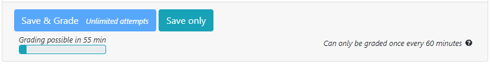

Practice is important in learning and there should be room for mistakes and learning from them. Immediate feedback can help as it can give feedback despite the limited human resources. However, to prevent mindless trial-and-error problem solving, controlling resubmissions can be an effective tool (Ihantola et. al., Review of Recent Systems for Automatic Assessment of Programming Assignments).
Thanks to Jonatan Schroeder, PrairieLearn now allows instructors to limit the amount of feedback provided to students by setting the rate at which graded submissions are allowed, in effect blocking students from requesting grade too often. The gradeRateMinutes setting was added, which indicates how long a student needs to wait after grading a question to resubmit a new answer to the same question for grading.
"zones": [
{
"gradeRateMinutes": 30,
"questions": [
{"id": "canOnlySubmitEvery30minutes", "points": 10},
{"id": "canOnlySubmitEvery60minutes", "points": 10, "gradeRateMinutes": 60},
{"id": "canSubmitAnytime", "points": 10, "gradeRateMinutes": 0}
]
}
],
Students are still able to save a submission, but are not able to grade until either the waiting time has elapsed, or when they finish the assesment.

Additional information can be found in the PrairieLearn documentation page.
Want to help make PrairieLearn better? It's open source and contributions are welcome!